Retrato de Juventude
Zine/ design/ concept/
(2025)
Childhood, being one of the most important stages of our development, plays a huge role even after it has come to an end. But what do we do when these memories are tainted? I think we can view these traumas as moldy walls: Will these walls ever be completely clean? For this magazine, I used photos of myself from May 5, 2006, until I turned 18, and I tried to find moldy or damaged images that symbolized the deterioration or trauma of childhood—photos that have completely faded over the years. I also included some scenes I used to post on Facebook, and it turned out really cool! In this project, I wanted to maintain a clean design with a regular layout and plenty of white space. Translated with DeepL.com (free version).
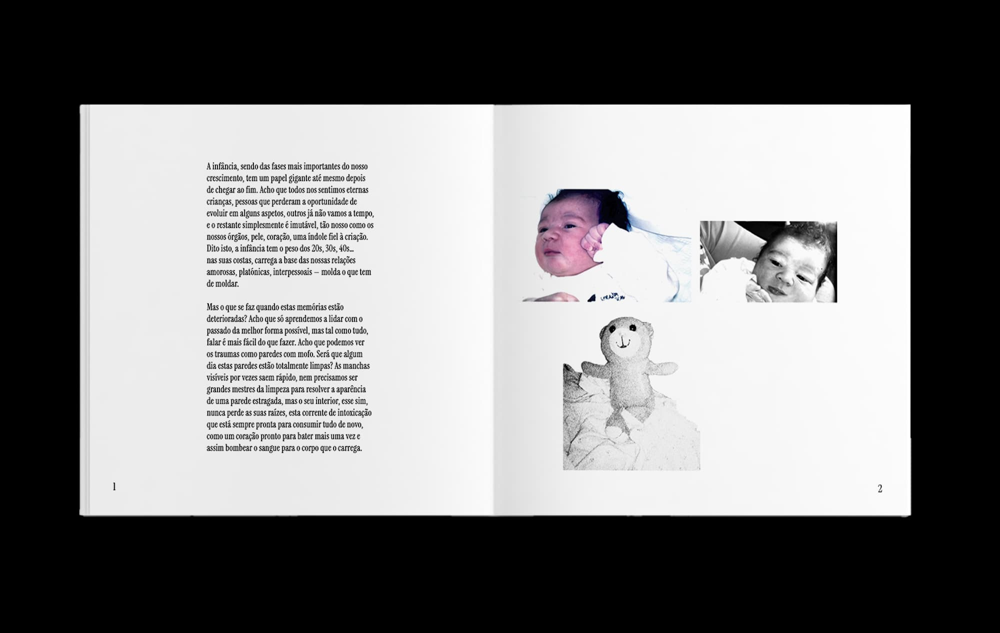
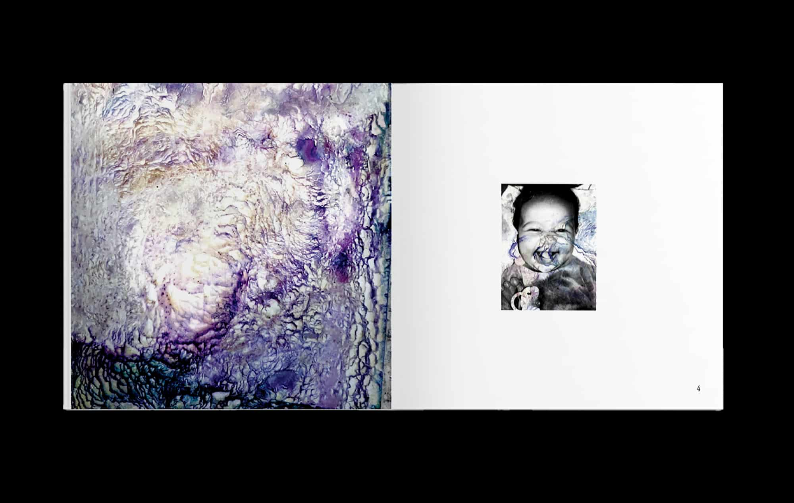
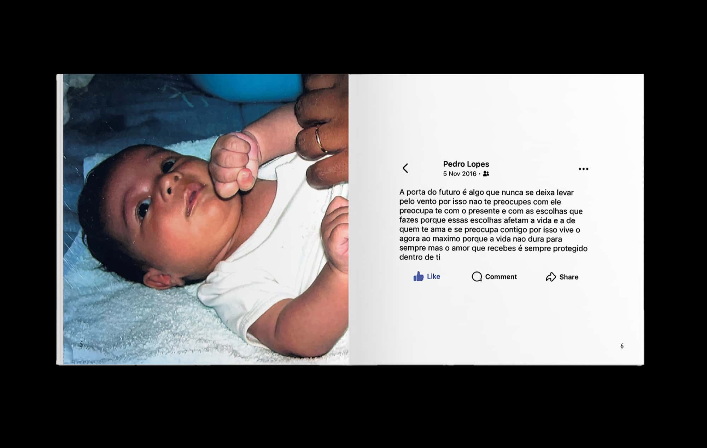
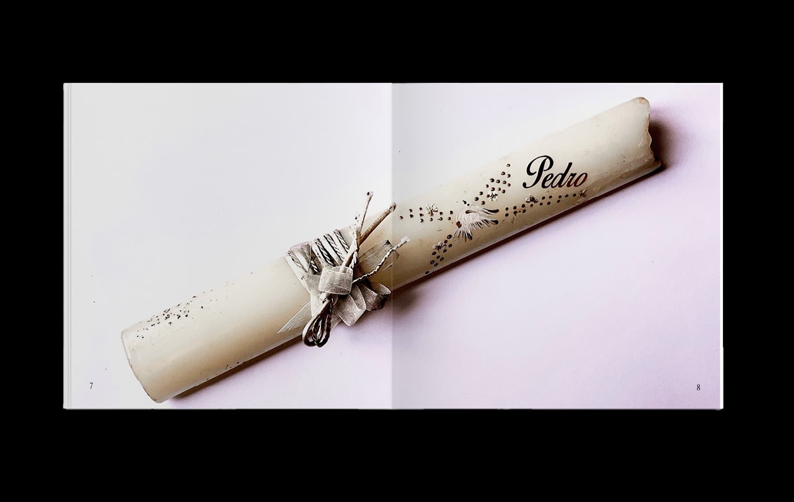
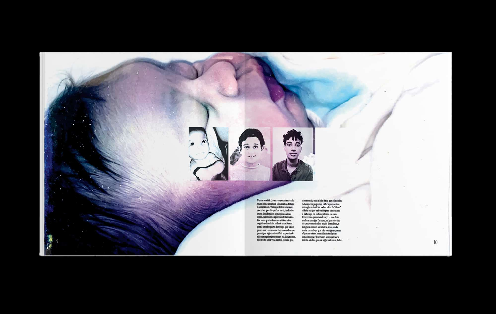
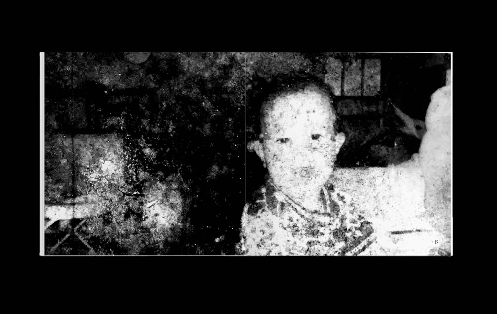
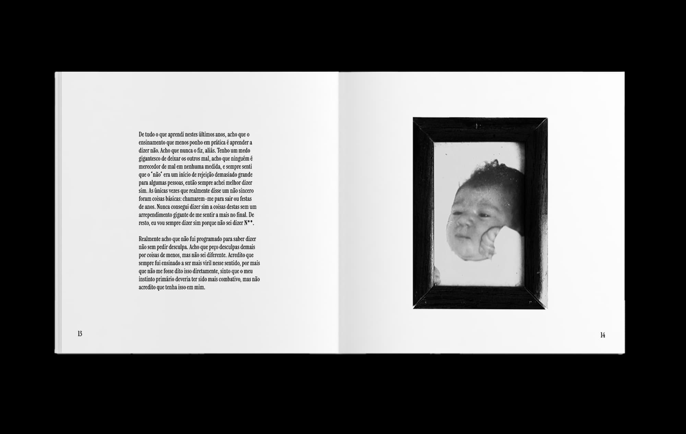
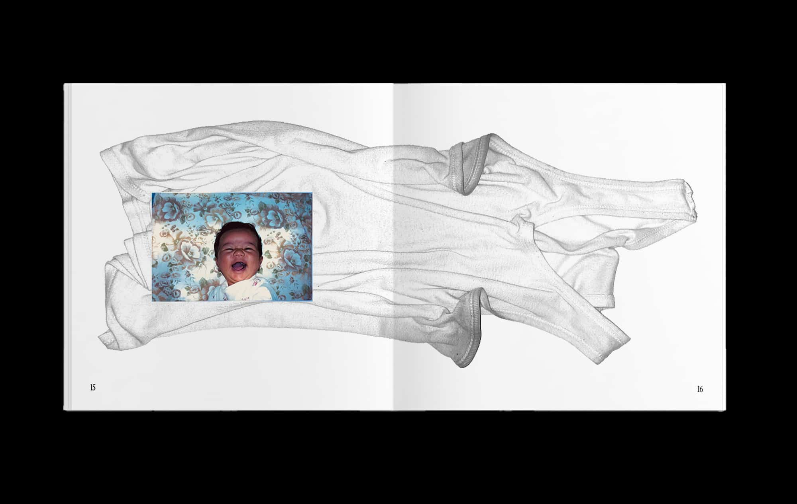
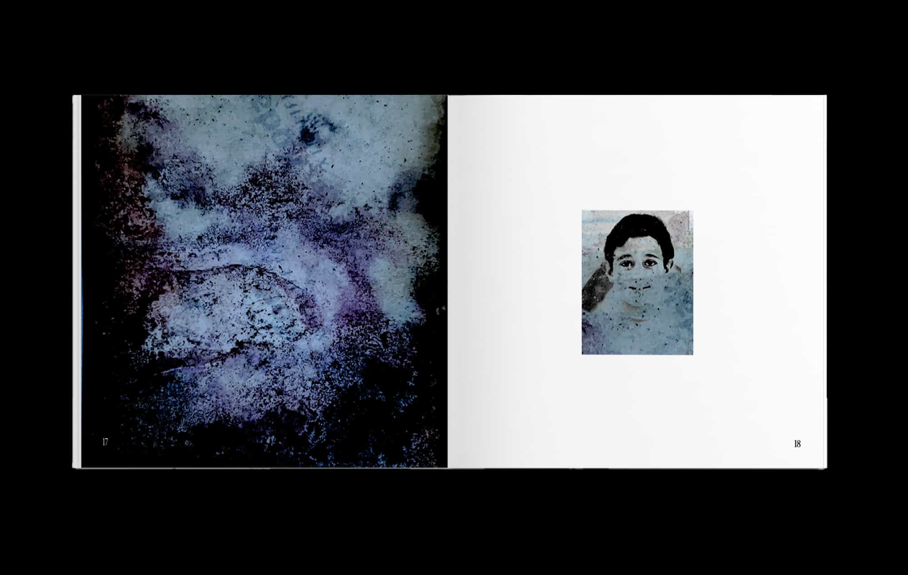
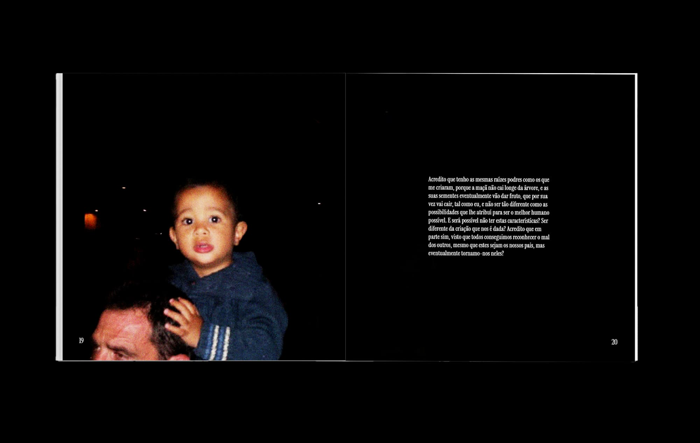
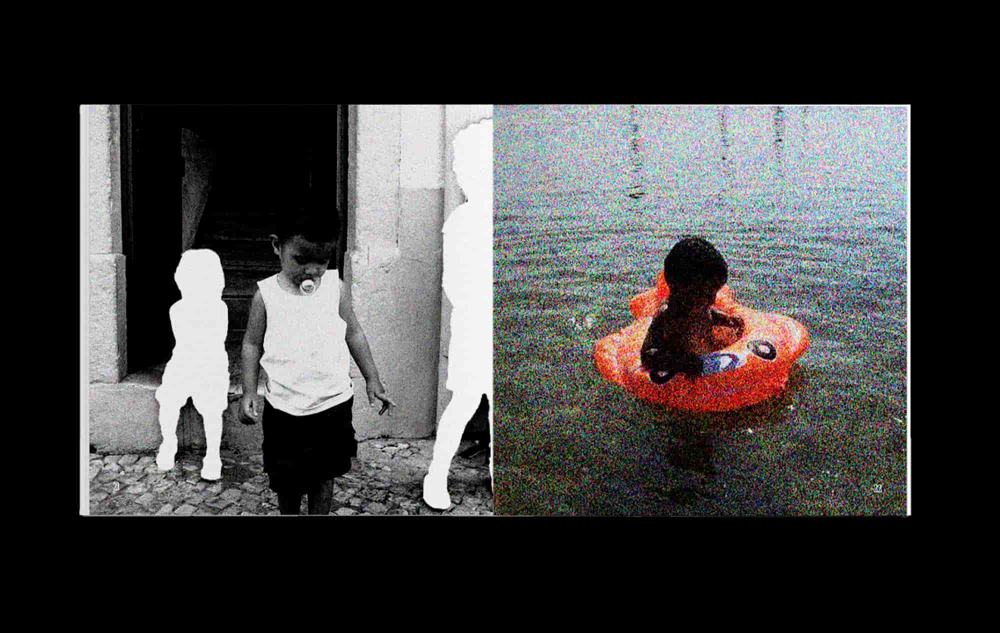
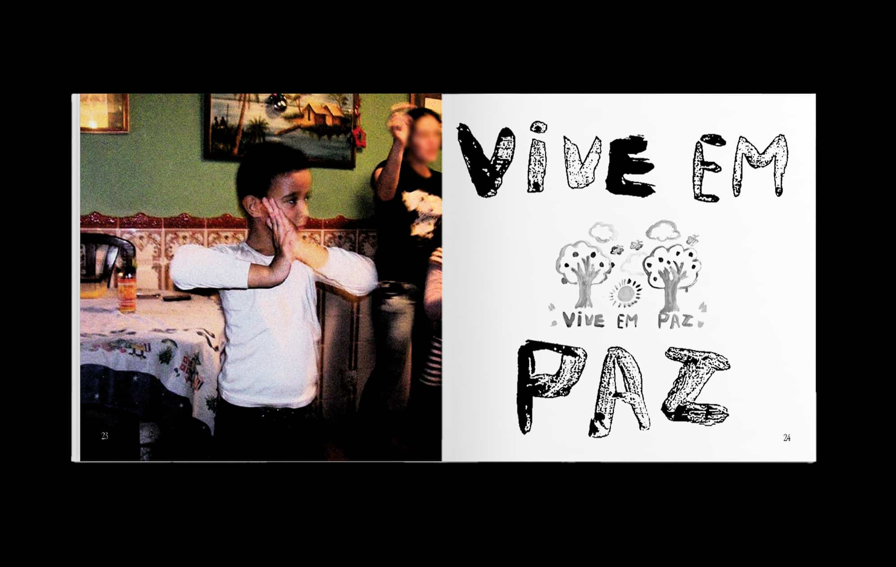
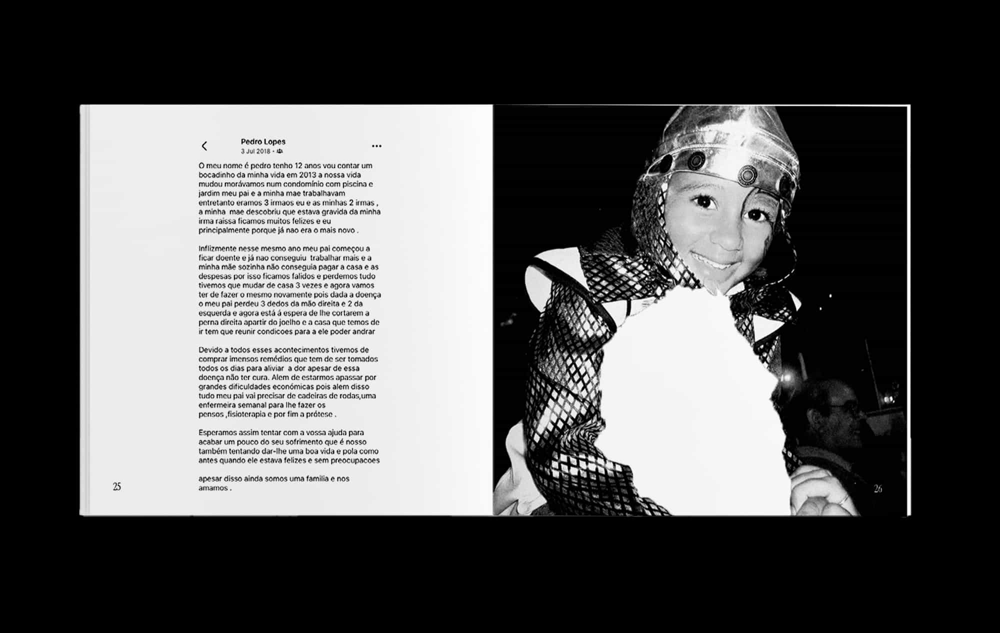
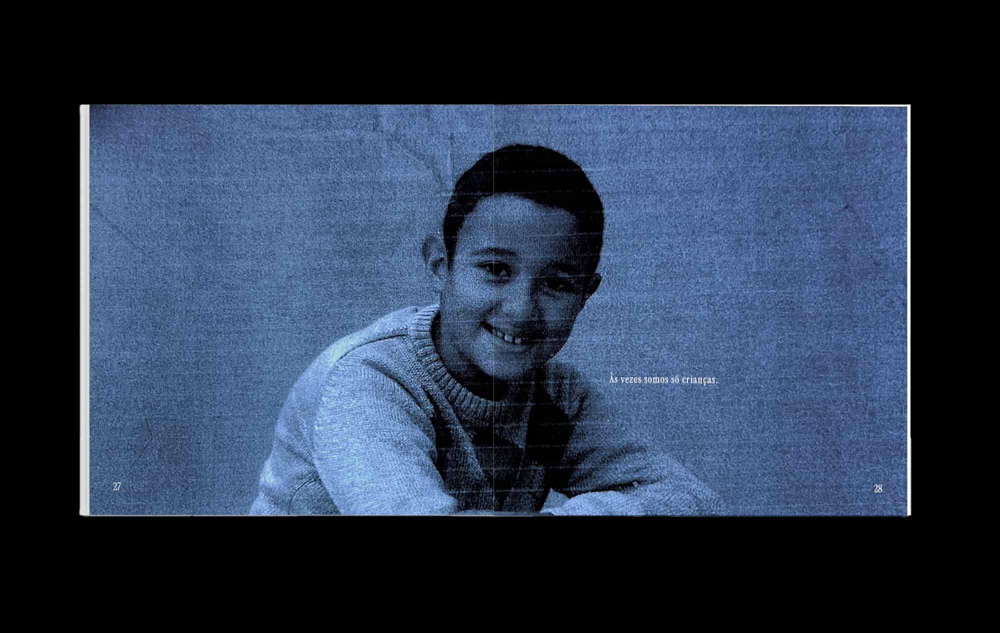